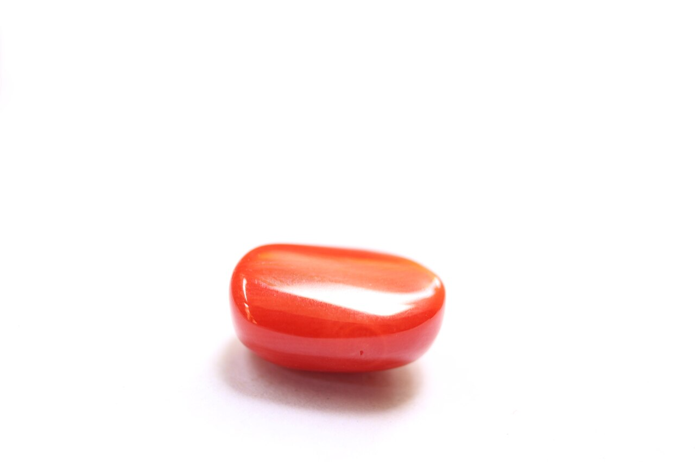

Ligdinus
Ligdinus to kamień o niezwykle białej barwie, wielkości filiżanki lub misy, po raz pierwszy znaleziony w Arabii. W Azji występują dwie odmiany: koralowa, nie większa niż dwa łokcie, oraz biała, przypominająca kość słoniową. ¹
Opis ogólny
Opis
Ligdinus to kamień o niezwykle białej barwie, wielkości filiżanki lub misy. Po raz pierwszy znaleziono go w Arabii. ¹
Odmiany
| Forma | Wygląd i miejsce | Źródła |
|---|---|---|
| Podtyp I: Koralowa odmiana Ligdinusa | Odmiana występująca w Azji, nie większa niż dwa łokcie. ¹ | ¹ |
| Podtyp II: Odmiana Ligdinusa podobna do kości słoniowej | Inna azjatycka odmiana, biaława jak kość słoniowa. ¹ | ¹ |
Podtyp I: Koralowa odmiana Ligdinusa

Zdjęcie przedstawia czerwony koral szlachetny (źródło).

Koralowa odmiana występuje w Azji. ¹ Nie przekracza dwóch łokci. ¹
Podtyp II: Odmiana Ligdinusa podobna do kości słoniowej

Zdjęcie przedstawia kalcyt (źródło).

Inna azjatycka odmiana jest biaława jak kość słoniowa. ¹
Źródła
1. Camillo Leonardi — Speculum Lapidum, Ligdinus
Ligdinus to kamień o niezwykle białej barwie, wielkości filiżanki lub misy, po raz pierwszy znaleziony w Arabii. W Azji występują dwie odmiany: koralowa, nie większa niż dwa łokcie, oraz biała, przypominająca kość słoniową.